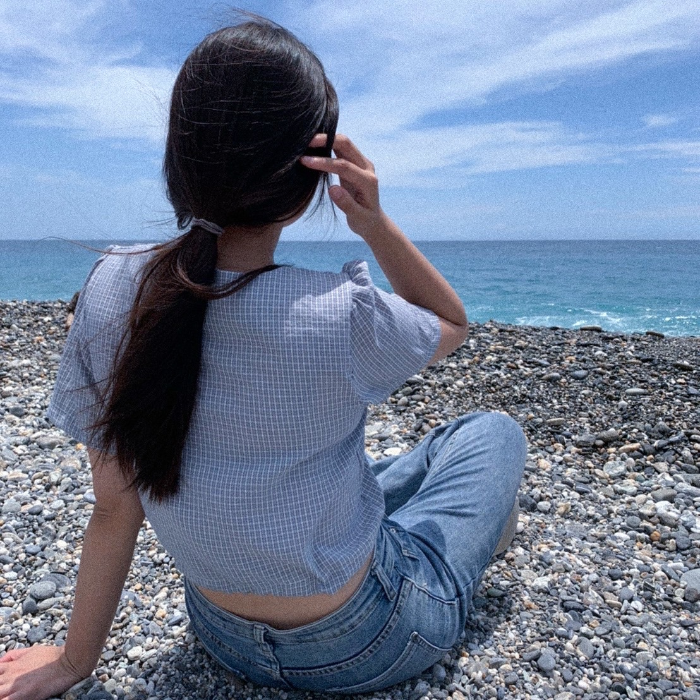

我高中就讀臺北市立復興高級中學，高中時，我總是興致勃勃的參加各種活動，為了累積經驗、找到自己喜愛的事物進而嘗試更多，因此我也獲取了些許的活動經歷。
舉例來講，當時學校有舉辦與日本姊妹校-虎姬高校，的參訪接待，此活動藉由遊戲的項目讓我們與日本學校的學生共同闖關，在過程中我學習了如何友善的與外籍朋友相處，也讓我明白，即使語言不通，當雙方共同面對一件事情時，也能相互合作。
不僅日本，還有新加坡「華文海外浸濡計畫」參訪接待，與日本學校接待不同，這次活動讓我們與新加坡學校的學生一起寫詩交流，過程中我們一起聊天，了解對方的文化和語言，也是一場收穫滿滿的交流。
除此之外，高二時，我參與了「復興高中飛艇公益工作室」計畫，參加此工作室，我學到了一個作品從無到有的階段，全都是自己完成需要耗費多少時間與力氣，首先是設計作品，再來製作過程，接著擺攤販售，都是考驗我們的創意和勇氣，我也了解到自己作品售出的喜悅。而我們作品的收入也全數捐獻，讓我感到十分有成就。
最後一項活動對我來說是個最大的挑戰-社團成果發表，也就是復興流音獨立大型成果發表，此項表演是我第一次站在台上，面對坐滿的觀眾席唱歌，對於不是那麼自信又些微內向的我來說，是個很大的挑戰，不過經歷過後，我發現只要一件事我專心並且盡全力的去做，就會完成得很順利，這也啟發了我，使我對自己更自信，日後的挑戰我也都能全力以赴的去完成。